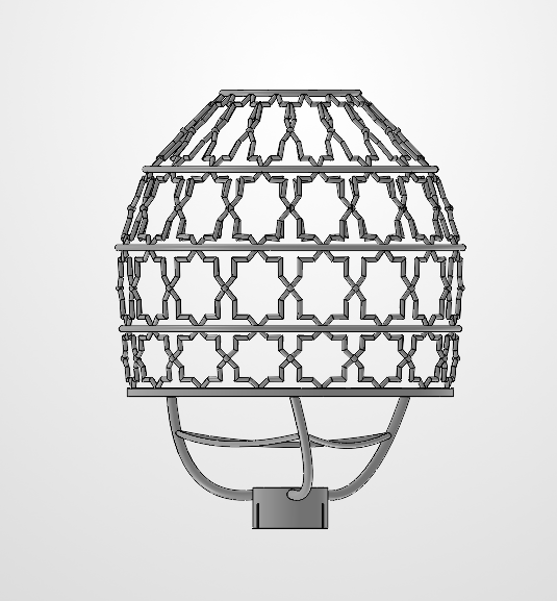
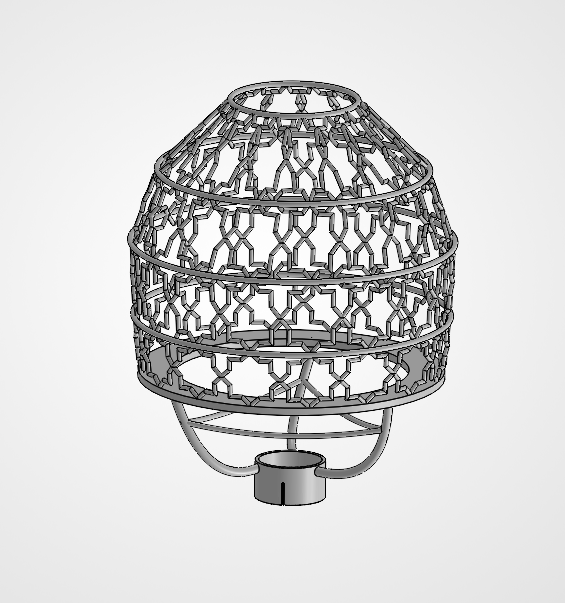
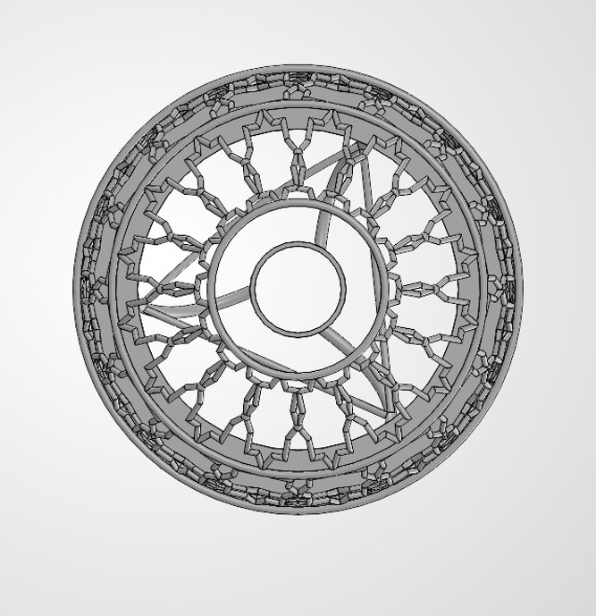
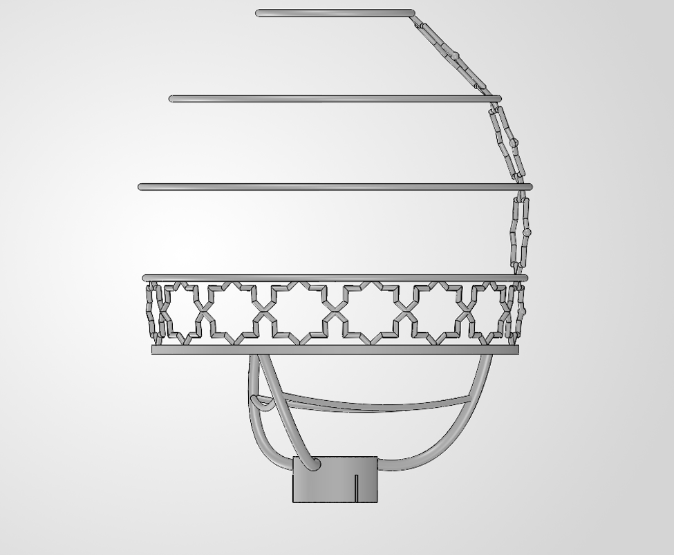

A pendant lamp combining a 3D-printed PETG lattice skeleton with a cast agar bioplastic skin. The canopy carries an eight-pointed Mudéjar star lattice, based on the open-centered outline stars of Spanish alicatado tilework, and the whole skeleton is modeled as a single printable body. The design is now at a v1 freeze, ahead of test printing.

Front view of the v1 skeleton

Isometric view, with the hub and ribs below the seam ring
The canopy is a lofted surface through five profile circles tied to a 3-point arc silhouette, giving a near-spherical ovoid: seam ring r = 2.60″ at Z = 2.5″, widest r = 3.17″ at Z = 5.16″, oculus r = 1.25″ at Z = 8.00″.
A deliberate trade-off: a traditional Mudéjar bell needs an inflection point, which a circular arc cannot produce; it would take a spline. I chose to keep the near-spherical shape and keep the project moving, rather than rework the silhouette for precision the lamp doesn't need.
My first plan was to project a flat lattice sketch onto the dome, and it kept failing. Parts of the sketch fell outside the face along the projection direction, and below the widest ring a straight projection hits the doubly curved surface twice. Instead of fighting the surface, I switched to a method that doesn't depend on it.
I set up a reference axis on the dome centerline and station planes every 22.5°, which divides the dome into 16 segments. Every structural node is fully defined by two relations: it sits on a profile circle and on a station plane. I modeled a single 22.5° repeat unit and generated the rest with a 16× circular pattern, which keeps the model parametric and replaced roughly 100 hand-placed struts with a few lines per band.
The first lattice used hoops, verticals, and crossing diagonals through shared nodes. When I built two bands and looked at them, they read as a structural truss, not Mudéjar ornament: all four line families met at single points, so there was no open star center. I suppressed that version rather than deleting it and redesigned around the alicatado motif, reusing the rings, axis, station planes, and node sketches.
Each cell between two rings now holds one eight-pointed outline star. Neighboring stars meet tip to tip, and the gaps between them form the crosses of the classic star-and-cross layout. Each star is a parametric sketch on a plane through three of its cell's corner nodes: a diamond through the edge midpoints, overlaid with a rectangle scaled by 1/√2 using sketch equations, trimmed to one closed 16-segment outline. Each star is swept as a strut and patterned 16 times around its band, across four bands from the seam ring up to a crown ring at the oculus, for 64 stars in total.
A side effect I kept: because each star lies on a flat plane through its cell corners, every band becomes a 16-sided faceted lantern. That faceting is itself characteristic of Mudéjar lanterns and cupolas.

Top view, showing the 16-fold pattern

Section view through the hoops, ribs, and hub
Getting the lattice to combine into one solid took a series of fixes, and I traced each failure to its cause rather than patching it.
Zero-thickness contacts. Combine failed where the seam ring met the strut ends, because the ring had been extruded in one direction and its face sat coplanar with the struts. A mid-plane extrusion fixed it. Neighboring stars touching exactly at their tips caused the same error, so I added 0.14″ spherical node beads at every shared tip. They give each joint real shared volume and read as a rivet-style detail. I validated the beads on one band before applying them to the rest.
Spikes at the crown. Sweep mitering at the acute star tips left spikes poking above the crown ring. Instead of cutting them off afterward, I flattened those tips in the sketch so each ends 0.06″ below the point inside the ring.
Sketches on tilted planes. The standard center rectangle aligns to the sketch axes, not the star, so it broke on the tilted cell planes. A three-point center rectangle aligned to the star's own axes solved it.
Proportions. The first stars looked too heavy for their size, so I moved from round 0.11″ struts to flat-faced struts with crisper outlines. I also managed the bodies deliberately, separating sweeps that had merged into a rib body and rejoining everything with body patterns and Combine.
The original plan split the dome at its widest ring so each half could print without supports. I now have access to a printer with water-soluble support, which removes those overhang limits. Whether the skeleton prints in one piece or splits at the widest ring depends on that printer's build volume, which I'm still confirming. The material will be PETG if the printer pairs it with PVA support, or PLA with attention to heat near the light source.